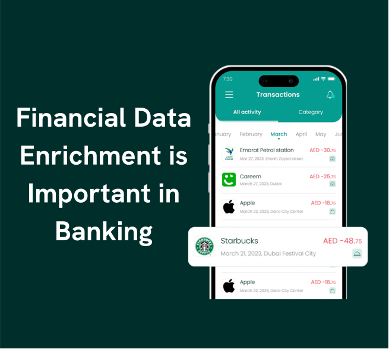

Why Financial Data Enrichment is Important in Banking
Learn about data enrichment, financial data enrichment and understand why it holds value when it comes to banking and finances.
Published on

We often hear the term "financial data enrichment" in the banking scene, and its importance is undeniable, but what's the financial enrichment meaning behind this buzzword? To give you more context about this matter - it involves supplementing basic financial data with additional, visually appealing information to make it more useful and insightful for the average person who may not be finance-savvy. There are two sides to this: one is what the end banking customer sees, and the other is what the digital team observes in the backend.
As someone working in the digital banking team, why should you even care? Having a thorough understanding of financial data enrichment engines can be advantageous for your team. Having insights into your customers' financial health gives you the clarity you need to make smarter strategic decisions. This effectively means that you could offer personalized banking services that can better meet your customers' needs. Let's break it down to understand why financial data enrichment is crucial in banking.
What is Financial Data Enrichment?
Think of financial data enrichment as the process of enhancing your existing basic financial data with meaningful information. Now, this type of meaningful output is precisely the kind of information you should be harvesting from your existing data. To make things simpler, in a digital banking context, rather than just knowing a customer made a $200 transaction, running that same transaction through a real-time enrichment engine could provide you with enrichment data that indicates the transaction was for a home improvement project at a specific hardware store. Just picture the possibilities for personalization that teams can implement to target their audiences; it's simply next-level.
Types of Financial Data That Can Be Enriched
Technically, all types of financial data can be enriched. Just to give you a bit more perspective, you can get insights from:
- Day-to-day transactional data
- Credit scores
- Investment histories
- Loan records
The list could go on and on. The applications for users could be quite extensive, and it fits seamlessly into your current operations, making it the best data enrichment tools to have. As for its use cases, you can apply it to:
- Banking
- Real estate
- Healthcare
- Government areas
- E-commerce
- B2B businesses
- B2C businesses
A Real Life Example
To give you a real-life example -Imagine a young professional who frequents coffee shops, and bookstores, and has a subscription to a career development course. Normally, banks only see these as generic transactions, say $5 here or $30 there.
But by running those transactions in a transaction enrichment engine, the bank understands these aren't just random spends. The bank would know that this is a career-oriented individual investing in personal growth and perhaps even an aspiring entrepreneur.
Now, instead of offering them a generic loan or a basic savings account, the bank can provide a "Future Entrepreneurs Package." This could include a higher-credit business loan pre-approval, a premium savings account with higher interest rates for higher balances, and even partnerships with co-working spaces or professional development courses.
Here, financial data enrichment allows the bank to tailor its services to fit its services just like a glove, making your customers feel seen, understood, and far more likely to engage with these personalized services.
How Does Enriched Financial Data Impact Banking Services?
For banks, the value is pretty much straightforward - Having access to more accurate data would equip your team with the right tools to make better business decisions, which could mean less risk and a high profitability in the long run. On the other hand, the end customers get a win too - they get services that actually make sense for them, which makes them more likely to stick around and even become advocates for the bank.
Loans
Instead of releasing generic loan packages, banks can now use enriched data to create bespoke packages that precisely meet the unique needs of individual customers, just like in the example of our young professional.
Investments
If a bank knows that a customer consistently invests in sustainable or tech companies, they could recommend a new, high-potential green tech IPO, thus providing their customers with more successful opportunities.
Risk Management
If the bank knows a customer regularly misses credit card payments but makes frequent luxury purchases, the risk associated with offering a large loan to this individual would likely be deemed high and vice versa. This targeted risk assessment becomes possible because of the enriched data, ultimately safeguarding both the bank and the customer.
Data Enrichment Tools and Technologies
Knowing what goes on in the background of these sophisticated enrichment engines is essential now that we have a better understanding of financial data enrichment. At its most fundamental, it consists of a collaboration of machine learning models, AI algorithms, and complementary natural language processing technologies. These are created to accomplish particular goals that the backend team has established. Of course, data engineering professionals are in charge of turning the raw data into useful insights.
So, what are some of the best data enrichment tools in the banking sector? Companies often use a mix of in-house solutions and third-party services. LuneData is regarded as one of the more capable businesses out there. Basically, they help businesses create personalized customer experiences while learning from the spending habits of their customers. Using unique AI technology that is tailored to the MENA area, it turns raw consumer payment and transaction data into data points.
Now, why should a bank invest in these tools?
Let's say your bank offers investment portfolio management services. Traditionally, investment managers might look at market trends and the customer's basic financial history to recommend investment options. However, after feeding a data enrichment tool with this information, you could factor in more targeted variables like the customer's spending on luxury or eco-friendly products, the stability of their income, and even trends in their business expenditures if they own a company.
Investment managers can offer more specialized suggestions using this enriched data that take into account a customer's values and lifestyle in addition to their financial goals. This enhances the advising service's personalization, which may increase client pleasure and loyalty.